Data Analysis
Chapter 11: Colour Scales and Legends
Shih Chien University
2026-06-05
Colour Scales and Legends
Overview
After position, colour is the most frequently used aesthetic in data visualisation. ggplot2 offers an extensive toolkit for mapping data values to colours, and the chapter is organised to cover the full range of scenarios:
- §11.1 — Foundational colour theory and colour-blindness considerations
- §11.2 — Continuous colour scales: palettes, gradients, missing values, limits/breaks/labels, and colour-bar legends
- §11.3 — Discrete colour scales: Brewer, hue, grey, paletteer, and manual palettes, plus legend customisation
- §11.4 — Binned colour scales: stepped gradients and step-legend guides
- §11.5 — Date-time colour scales
- §11.6 — Alpha (transparency) scales
- §11.7 — Legend position and layout
Throughout this chapter, scale_fill_*() functions are used in most code examples, but every concept applies equally to scale_colour_*() (or scale_color_*() in US spelling).
A Little Colour Theory
A Little Colour Theory
Colour is physically produced by a mixture of light wavelengths. Although a complete characterisation of a colour requires the full wavelength spectrum, the human visual system possesses only three types of cone receptor, so any perceived colour can be encoded with just three numbers.
The familiar RGB colour space encodes colours as red, green, and blue intensities. A key drawback of RGB is that it is not perceptually uniform: two pairs of colours separated by the same numeric distance may look very similar or very different, depending on where they fall in the space.
A more principled alternative is the HCL colour space, defined by three perceptually meaningful dimensions:
| Dimension | Range | Perceptual meaning |
|---|---|---|
| Hue | 0–360° | The “colour” of the colour (red, blue, green, …) |
| Chroma | 0–max | Colour purity: 0 = grey, max = vivid |
| Luminance | 0–1 | Lightness: 0 = black, 1 = white |
Key perceptual properties of the HCL dimensions:
- Hue is not perceived as ordered — green is not “greater than” red.
- Chroma and Luminance are perceived as ordered — more saturated or lighter colours appear systematically different from desaturated or darker ones.
This distinction has direct consequences for palette design:
- Sequential palettes (for ordered data) vary chroma and/or luminance while keeping hue constant.
- Diverging palettes (for data with a meaningful midpoint) use two hues that diverge from a neutral centre.
- Qualitative palettes (for unordered categories) vary hue while keeping chroma and luminance roughly constant.
Colour Blindness
A meaningful proportion of the population has reduced colour discrimination due to atypical colour-receptor complements. The most common form affects the ability to distinguish red from green. Practical guidelines:
- Avoid relying solely on red–green contrasts.
- Verify your palette using simulation tools (e.g., https://www.vischeck.com/) or R packages such as
dichromatorcolorBlindness.
The colorBlindness::displayAllColors() function approximates how a palette appears under different forms of colour blindness. For example, rainbow() colours are problematic:
By contrast, viridis palettes are designed to be discriminable under the most prevalent forms of colour blindness and to reproduce well in greyscale:
Where possible, supplement colour with a redundant aesthetic (shape, line type, or size) to assist colour-blind readers.
Continuous Colour Scales
Continuous Colour Scales
A 2D density surface of the faithful dataset—recording the waiting time between and duration of eruptions of Old Faithful—serves as the running example throughout this section. The erupt base plot hides the legend and removes axis expansion to focus on palette appearance:
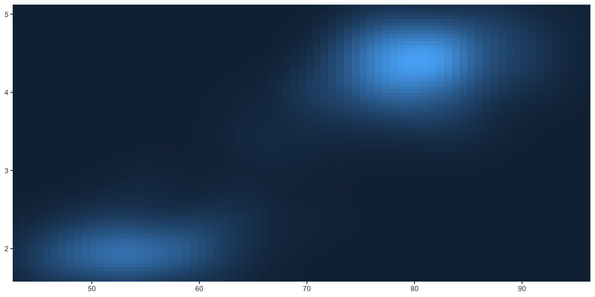
Particular Palettes
ggplot2 bundles two families of pre-specified continuous colour palettes.
Viridis scales (scale_fill_viridis_c()) are perceptually uniform under both full colour vision and greyscale reproduction, and are safe for common forms of colour blindness. Several named options are available:
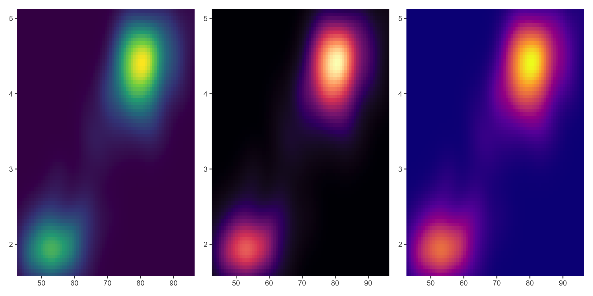
ColorBrewer scales are also available for continuous data via scale_fill_distiller(), which interpolates between hand-selected sequential or diverging Brewer palettes:
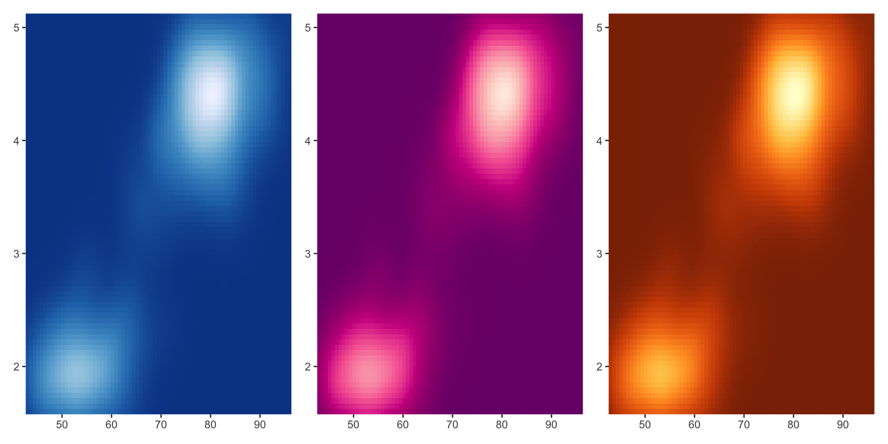
The paletteer package provides a unified interface to a very large collection of palettes from numerous R packages. The _c suffix indicates continuous palettes:
The scico package offers additional perceptually uniform, scientific palettes:
Robust Recipes
The default continuous fill scale is scale_fill_continuous(), which itself defaults to scale_fill_gradient(). These three calls are therefore identical:
Gradient scales interpolate linearly between two or more reference colours. Three functions cover different use cases:
| Function | Description |
|---|---|
scale_fill_gradient() |
Two-colour gradient (low → high) |
scale_fill_gradient2() |
Three-colour gradient with a user-defined midpoint colour |
scale_fill_gradientn() |
n-colour gradient from a vector of reference colours |
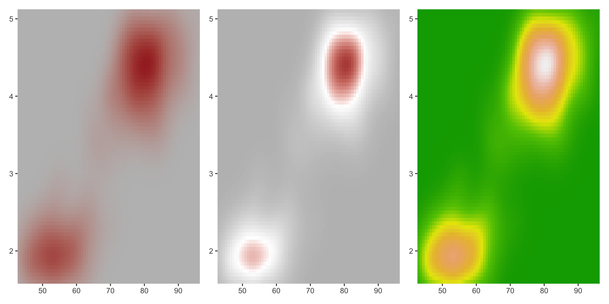
Designing sequential palettes with Munsell
For a perceptually clean sequential scale, hold hue constant and vary chroma and luminance. The munsell package provides colour specification by HCL-like components:
The Munsell notation "5P 2/12" means: hue 5P, value (luminance) 2, chroma 12. Keeping hue and chroma constant while varying value produces a clean sequential gradient.
Designing diverging and n-colour palettes
For a diverging scale (one with a meaningful midpoint, such as zero), two distinct hues radiate outward from a neutral centre. The colorspace package provides perceptually grounded multi-hue palettes:
p_div <- erupt +
scale_fill_gradient2(
low = munsell::mnsl("5B 7/8"),
high = munsell::mnsl("5Y 7/8"),
mid = munsell::mnsl("N 7/0"),
midpoint = .02
)
p_heat <- erupt +
scale_fill_gradientn(colours = colorspace::heat_hcl(7))
p_div2 <- erupt +
scale_fill_gradientn(colours = colorspace::diverge_hcl(7))
p_div | p_heat | p_div2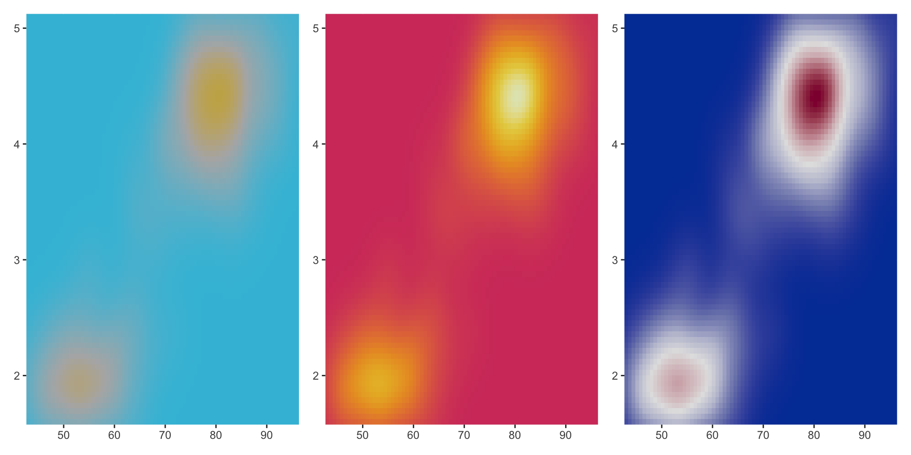
Missing Values
All continuous colour scales accept an na.value argument that determines the colour rendered for NA observations and for values that fall outside the declared scale limits. The default is grey; set it to NA to render missing values as transparent, or supply any valid colour string:
df <- data.frame(x = 1, y = 1:5, z = c(1, 3, 2, NA, 5))
base_na <- ggplot(df, aes(x, y)) +
geom_tile(aes(fill = z), linewidth = 5) +
labs(x = NULL, y = NULL) +
scale_x_continuous(labels = NULL)
p_def <- base_na
p_inv <- base_na + scale_fill_gradient(na.value = NA)
p_yel <- base_na + scale_fill_gradient(na.value = "yellow")
p_def | p_inv | p_yel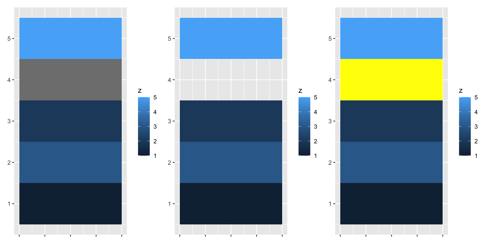
Limits, Breaks, and Labels
Colour scales support the same limits, breaks, and labels arguments as position scales (§10.1). Extending the toy dataset example from §10.1.4:
toy <- data.frame(
const = 1, up = 1:4, txt = letters[1:4],
big = (1:4) * 1000, log = c(2, 5, 10, 2000)
)
base_c <- ggplot(toy, aes(up, up, fill = big)) +
geom_tile() + labs(x = NULL, y = NULL)
p_def <- base_c
p_lim <- base_c + scale_fill_continuous(limits = c(0, 10000))
p_brk <- base_c + scale_fill_continuous(breaks = c(1000, 2000, 4000))
p_lbl <- base_c + scale_fill_continuous(labels = scales::label_dollar())
(p_def | p_lim) / (p_brk | p_lbl)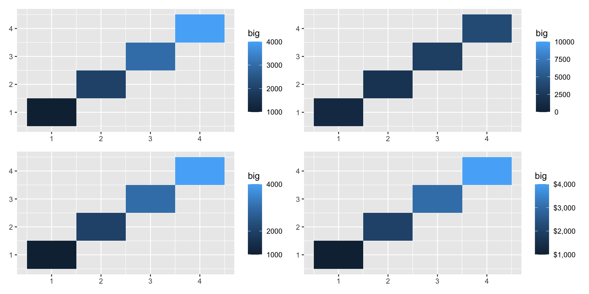
Setting breaks = NULL removes the legend keys and labels entirely.
Legends
For continuous colour scales, the default legend takes the form of a colour bar — a smooth gradient strip. Its appearance is controlled by guide_colourbar(), passed either through guides() or through the guide argument of the scale function directly.
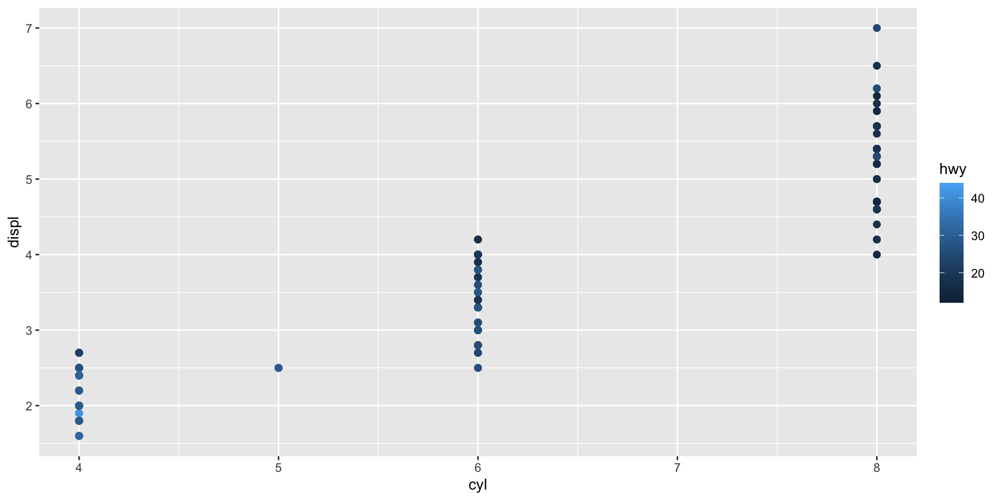
Key arguments of guide_colourbar():
| Argument | Effect |
|---|---|
reverse |
Flip the bar (lowest values at the top) |
barwidth / barheight |
Resize the bar using grid units |
direction |
"horizontal" or "vertical" |
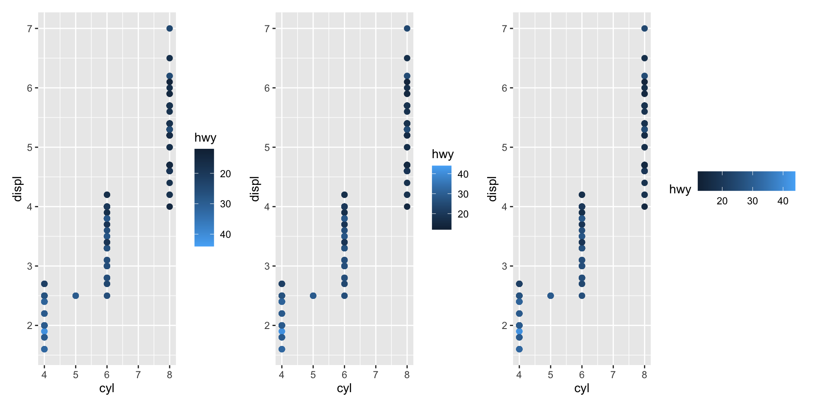
The guides() function and the guide argument to the scale function are fully equivalent:
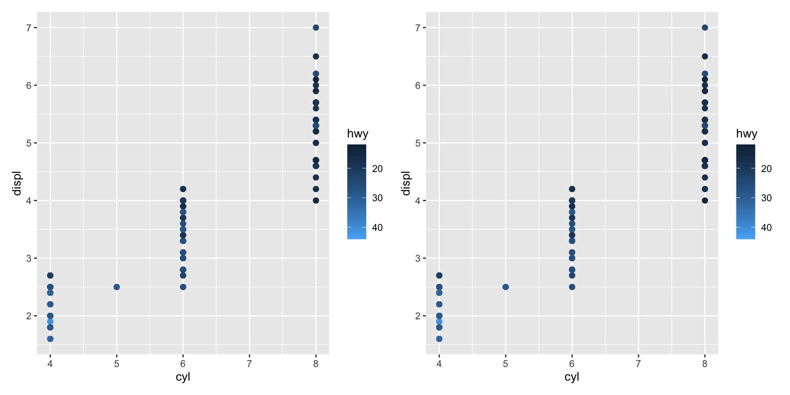
Discrete Colour Scales
Discrete Colour Scales
Discrete colour and fill scales are used whenever a categorical variable is mapped to colour. A bar chart that encodes both position and fill to the same variable serves as the running example:
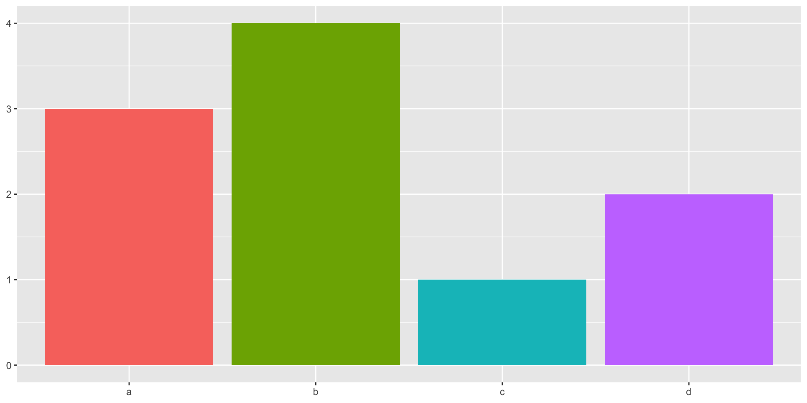
The default scale is scale_fill_discrete(), which delegates to scale_fill_hue(). These three calls produce identical output.
Brewer Scales
scale_fill_brewer() accesses the ColorBrewer palettes from https://colorbrewer2.org/ — a collection of hand-crafted palettes designed for maps but widely applicable in other contexts. The full palette catalogue can be viewed with:
Three palette families are available:
- Sequential — for ordered discrete data (also available via
scale_fill_distiller()for continuous data) - Diverging — for data with a meaningful midpoint
- Qualitative — for unordered categories;
"Set1","Dark2"suit points;"Set2","Pastel1","Pastel2","Accent"suit filled areas
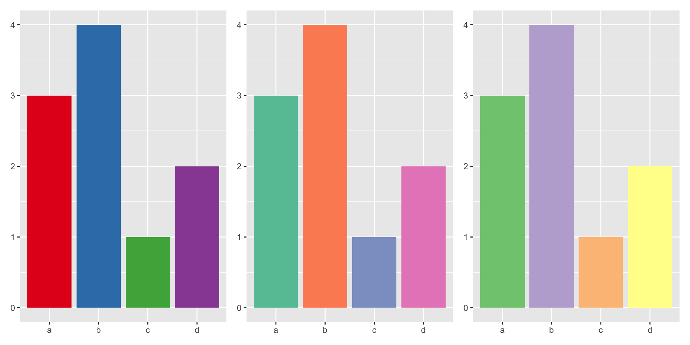
Palette choice should match the geometry. Scatter plots use small markers, so vivid colours improve discriminability:
df_pt <- data.frame(
x = 1:3 + runif(30), y = runif(30), z = c("a", "b", "c")
)
point <- ggplot(df_pt, aes(x, y)) +
geom_point(aes(colour = z)) +
theme(legend.position = "none") + labs(x = NULL, y = NULL)
point + scale_colour_brewer(palette = "Set1") |
point + scale_colour_brewer(palette = "Set2") |
point + scale_colour_brewer(palette = "Pastel1")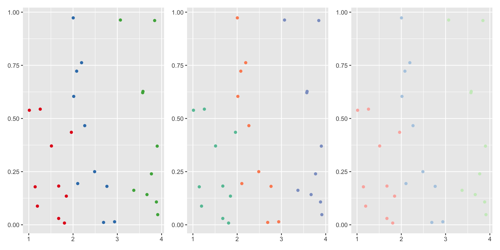
Bar charts cover large colour areas, so subtle, muted palettes tend to look cleaner:
df_area <- data.frame(x = 1:3, y = 3:1, z = c("a", "b", "c"))
area <- ggplot(df_area, aes(x, y)) +
geom_bar(aes(fill = z), stat = "identity") +
theme(legend.position = "none") + labs(x = NULL, y = NULL)
area + scale_fill_brewer(palette = "Set1") |
area + scale_fill_brewer(palette = "Set2") |
area + scale_fill_brewer(palette = "Pastel1")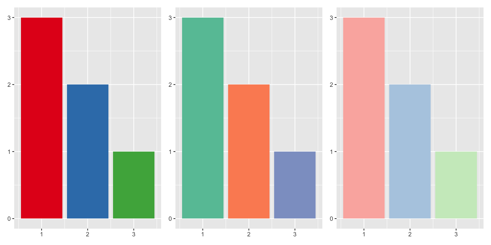
Hue and Grey Scales
The default scale_fill_hue() distributes colours at equal angular intervals around the HCL hue wheel, holding chroma and luminance constant. This works reliably for up to about eight categories. Three arguments allow customisation:
h— range of hues (a numeric vector of length 2, angles 0–360)c— chroma level (colour saturation)l— luminance level (lightness)
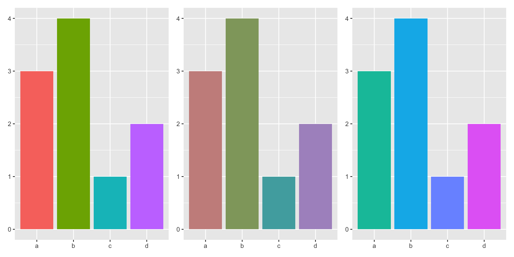
Two limitations of scale_fill_hue() are worth noting:
- Because all colours share the same luminance and chroma, they collapse to identical greys when printed in black and white.
- The palette is not colour-blind safe.
When black-and-white reproduction is required, use scale_fill_grey(), which maps categories to a range of grey tones from light to dark:
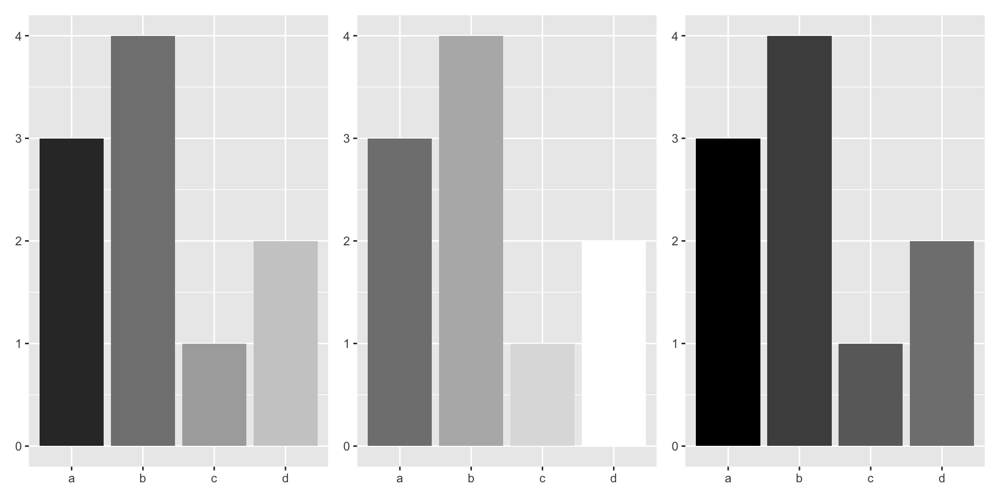
The start and end arguments (range 0–1) define the grey range, where 0 is black and 1 is white.
Paletteer Scales
The paletteer package aggregates palettes from dozens of R packages into a single consistent interface. For discrete scales, use scale_fill_paletteer_d() (the _d suffix denotes discrete):
Palette identifiers follow the "package::palette_name" convention. The full catalogue is searchable at https://pmassicotte.github.io/paletteer_gallery/.
Manual Scales
When none of the pre-built palettes meets your requirements—or when specific colour choices carry semantic meaning—use scale_fill_manual() to assign colours by hand.
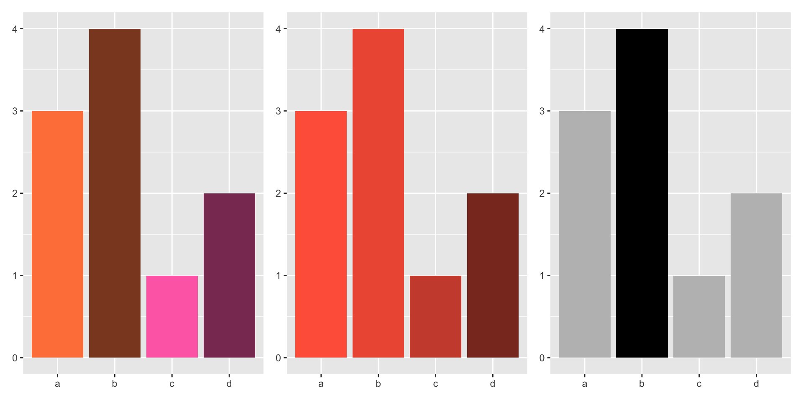
A named vector allows you to decouple the ordering of colour assignments from the order of factor levels. Only the category whose name matches "b" receives black:
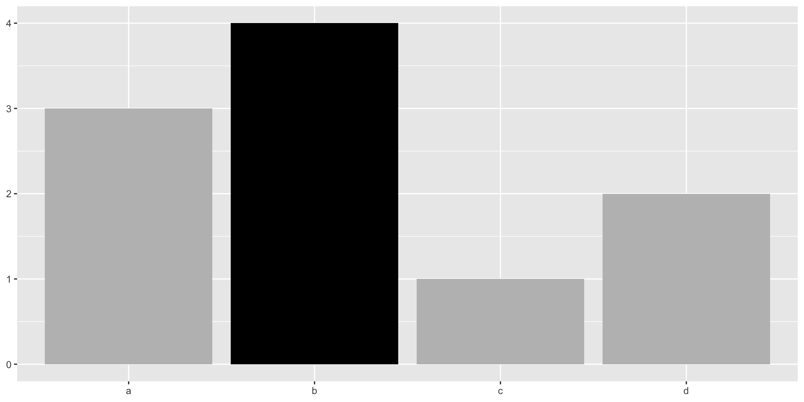
Named vectors are particularly useful when a specific group needs to be highlighted, or when the colours must remain stable across plots that show different subsets of the data.
Limits, Breaks, and Labels
When the same categorical variable is plotted across multiple panels or plots, it is essential that colours are mapped consistently. The lims() helper function accepts discrete aesthetic limits as a character vector specifying all allowable values in display order:
library(dplyr)
mpg_99 <- mpg |> filter(year == 1999)
mpg_08 <- mpg |> filter(year == 2008)
base_99c <- ggplot(mpg_99, aes(displ, hwy, colour = fl)) + geom_point()
base_08c <- ggplot(mpg_08, aes(displ, hwy, colour = fl)) + geom_point()
base_99c + lims(colour = c("c", "d", "e", "p", "r")) |
base_08c + lims(colour = c("c", "d", "e", "p", "r"))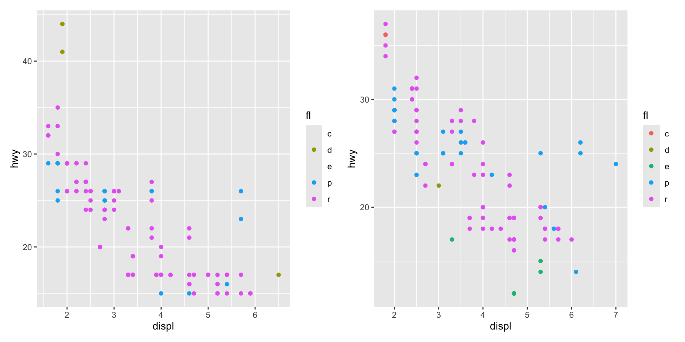
lims() can synchronise multiple aesthetics in a single call:
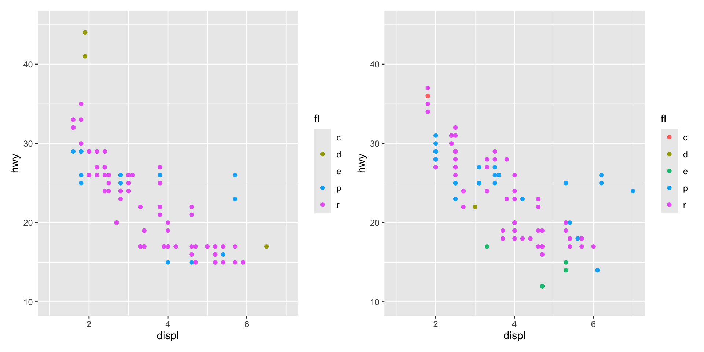
When finer control is needed—for example, showing labels only for the fuel types present in a particular year’s data—use scale_colour_discrete() directly:
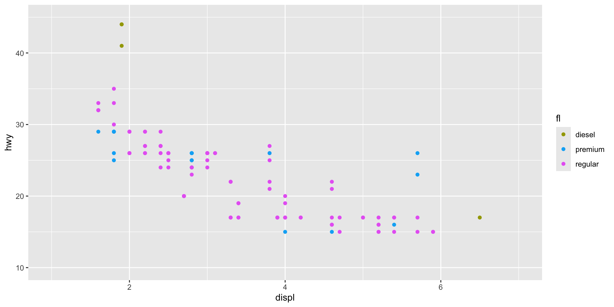
The limits argument controls which values receive a colour mapping; breaks controls which values appear in the legend; labels customises the display text for each break.
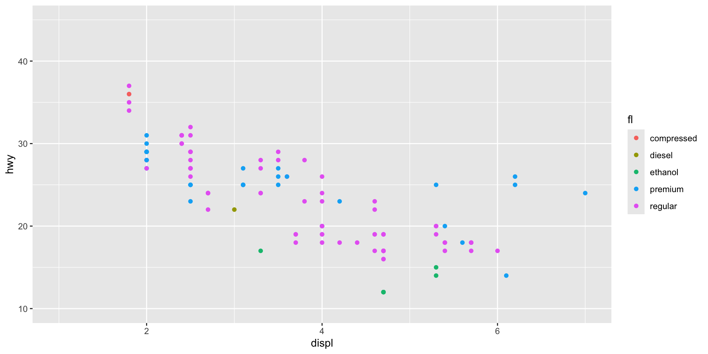
Legends
Discrete colour legends are customised with guide_legend(). The most useful arguments are:
| Argument | Effect |
|---|---|
nrow / ncol |
Set legend table dimensions |
byrow |
Fill legend by row (TRUE) or column (FALSE, default) |
reverse |
Reverse the key order |
override.aes |
Override geom aesthetics within the legend only |
keywidth / keyheight |
Resize legend keys (grid units) |
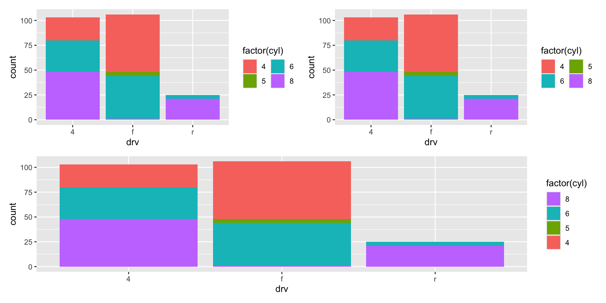
override.aes is particularly important when the plot uses transparency or small sizes that make legend keys hard to see:
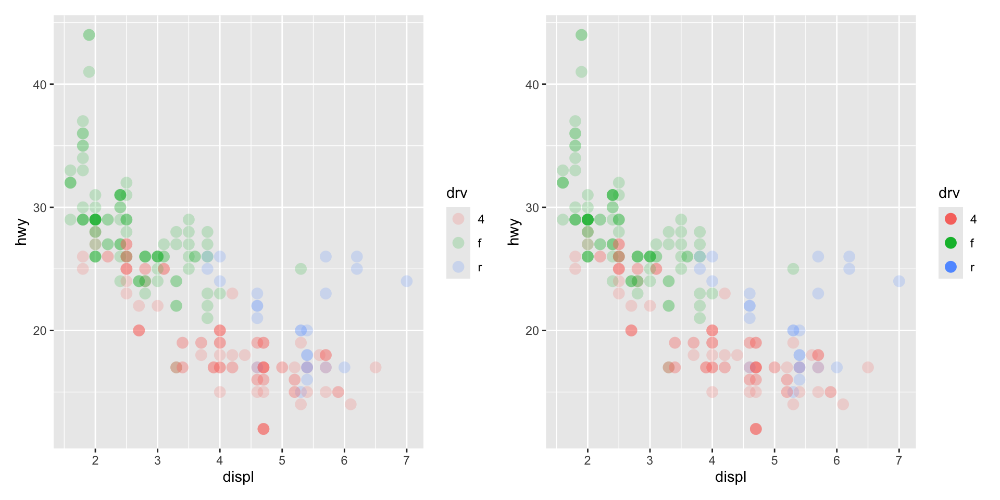
The right panel sets alpha = 1 in the legend keys only, making them fully opaque and clearly readable even though the plot points are semi-transparent.
Binned Colour Scales
Binned Colour Scales
Binned colour scales discretise a continuous variable into a fixed number of colour steps. This can improve perception of gradients, because the human visual system detects sharp colour boundaries (edges) more readily than smooth gradients.
The default binned scale is scale_fill_binned(), which delegates to scale_fill_steps(). The n.breaks argument controls the number of colour steps:
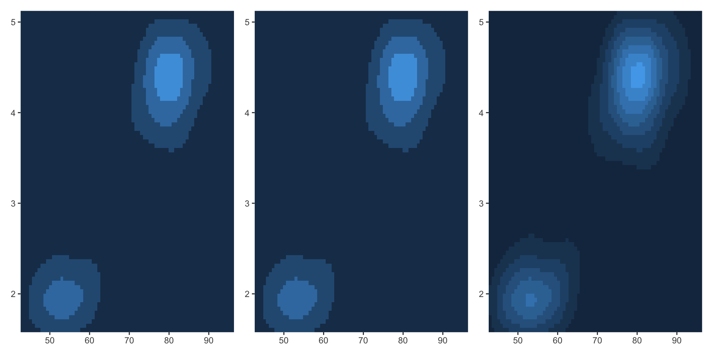
scale_fill_steps() mirrors the API of scale_fill_gradient(). Two-colour, three-colour, and n-colour variants are available:
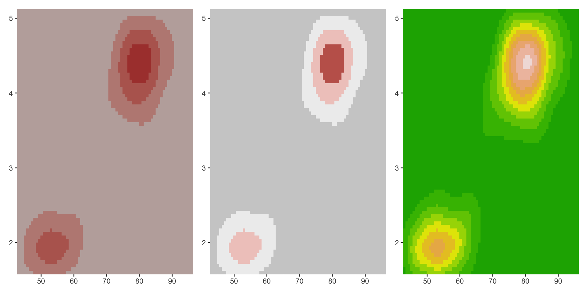
Viridis palettes can be applied to binned scales by passing the palette-generating function directly to the colours argument of scale_fill_stepsn():
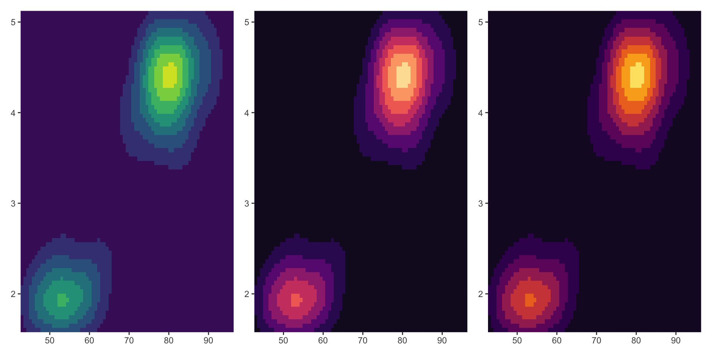
scale_fill_fermenter() is the binned counterpart of the Brewer family:
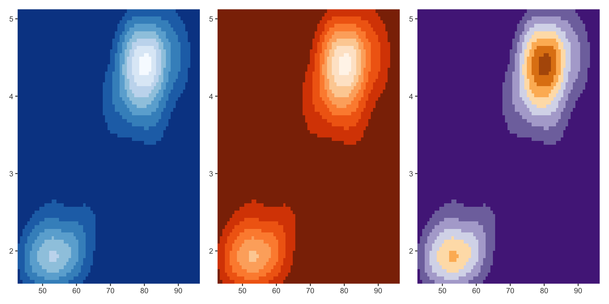
Note: unlike scale_fill_distiller(), scale_fill_fermenter() does not interpolate between Brewer colours. If n.breaks exceeds the number of colours in the palette, a warning is issued and some steps will be suppressed.
Limits, Breaks, and Labels
Setting limits, breaks, and labels for binned scales follows the same conventions as for continuous scales (§11.2.4). The important difference is that the breaks argument defines the edges of bins, not just tick-mark positions. Consequently, the number of breaks equals the number of bins plus one.
Both the limits and breaks arguments accept functions in addition to fixed vectors, as described in §10.1.
Legends
Binned colour scales use a colour step legend by default, rendered as a series of discrete colour blocks. This is customised through guide_coloursteps(), which extends the arguments of guide_colourbar() with binned-specific options:
| Argument | Effect |
|---|---|
show.limits |
Show values at the extremes of the colour bar |
ticks |
Show/hide tick marks adjacent to labels |
even.steps |
Whether bins are displayed at equal widths (TRUE) or proportional to their data frequency (FALSE) |
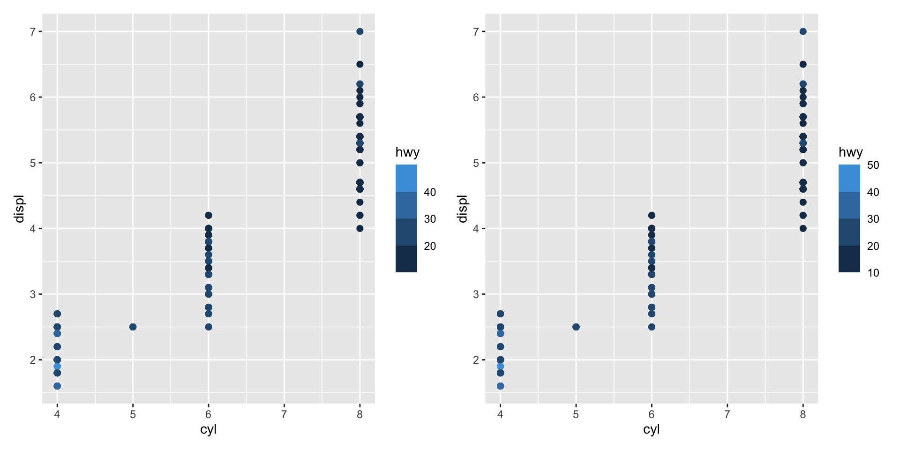
Date-Time & Alpha Scales
Date-Time Colour Scales
When a date or date-time variable is mapped to colour or fill, ggplot2 automatically selects scale_colour_date() or scale_colour_datetime(). These scales mirror the behaviour of date-time position scales (§10.2) and expose date_breaks and date_labels arguments for human-friendly control:
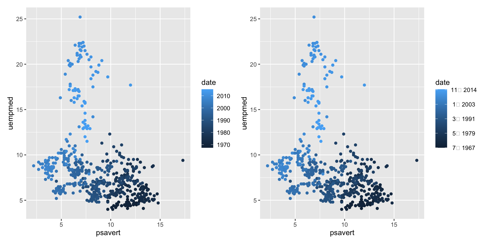
The date_labels argument accepts strptime-style format strings (see §10.2.3 for the full table).
Alpha Scales
The alpha aesthetic controls the transparency of rendered elements, where 0 is fully transparent and 1 is fully opaque. Mapping alpha to a data variable creates a visual down-weighting effect, drawing the eye towards high-alpha (more opaque) observations.
scale_alpha() is an alias for scale_alpha_continuous(), saving a few keystrokes in the most common use case:
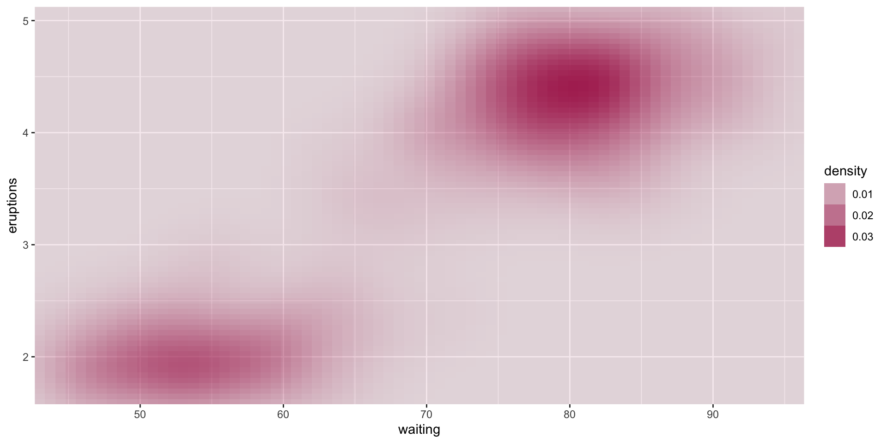
Regions of high density are rendered fully opaque in dark maroon, while low-density regions fade towards transparency. Alpha scales are most effective when paired with a visually distinctive fill colour.
Legend Position
Legend Position
The overall placement of the legend is controlled through the theme system via the legend.position setting. Accepted values are the strings "right" (default), "left", "top", "bottom", and "none" (suppresses all legends):
toy <- data.frame(
const = 1, up = 1:4, txt = letters[1:4],
big = (1:4) * 1000, log = c(2, 5, 10, 2000)
)
base_lg <- ggplot(toy, aes(up, up)) +
geom_point(aes(colour = txt), size = 3) + xlab(NULL) + ylab(NULL)
p_l <- base_lg + theme(legend.position = "left")
p_r <- base_lg + theme(legend.position = "right")
p_b <- base_lg + theme(legend.position = "bottom")
p_n <- base_lg + theme(legend.position = "none")
(p_l | p_r) / (p_b | p_n)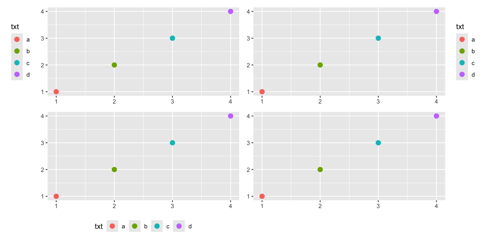
Three additional theme settings provide finer control over legend layout when multiple legends are present:
| Setting | Values | Effect |
|---|---|---|
legend.direction |
"horizontal" / "vertical" |
Direction of key layout within each legend |
legend.box |
"horizontal" / "vertical" |
How multiple legends are stacked relative to each other |
legend.box.just |
"top", "bottom", "left", "right" |
Justification of each legend within the overall legend box |
Placing the legend inside the panel
When the plot has substantial blank space, positioning the legend within the panel area can be more compact. Provide legend.position as a numeric vector of length 2, where c(0, 0) is the bottom-left corner and c(1, 1) is the top-right corner. The legend.justification setting controls which corner of the legend box is anchored to the specified position:
base_lg2 <- ggplot(toy, aes(up, up)) +
geom_point(aes(colour = txt), size = 3)
p_tl <- base_lg2 +
theme(legend.position = c(0, 1), legend.justification = c(0, 1))
p_cc <- base_lg2 +
theme(legend.position = c(0.5, 0.5), legend.justification = c(0.5, 0.5))
p_br <- base_lg2 +
theme(legend.position = c(1, 0), legend.justification = c(1, 0))
p_tl | p_cc | p_br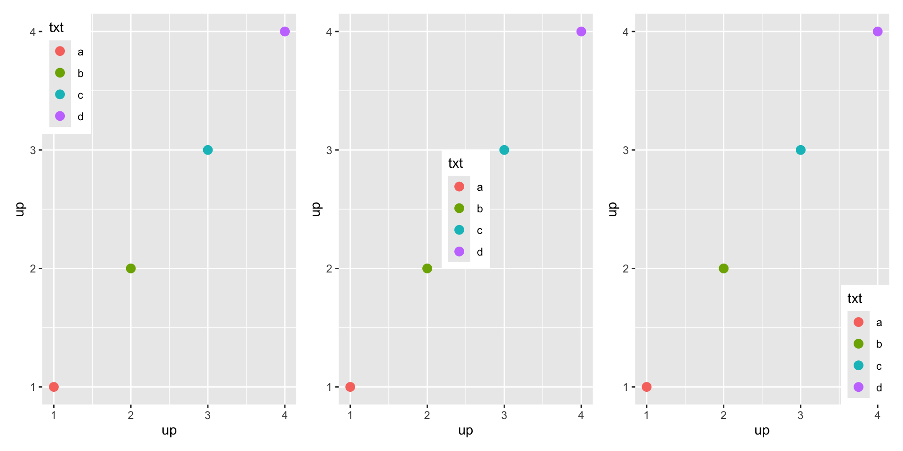
Use legend.margin = unit(0, "mm") to remove the padding around the legend box if needed.
Exercises
Using
faithfuld, apply three different viridis palette options ("viridis","magma","inferno") to theeruptbase plot and compare how well each communicates the density surface.Build a scatterplot of
mpgwithcolour = drv. Apply (a)scale_colour_brewer(palette = "Set1"), (b)scale_colour_grey(), and (c) a manual palette of your choice. Which works best for a colour-blind reader and why?Demonstrate the difference between
scale_fill_gradient(),scale_fill_gradient2(), andscale_fill_gradientn()using thefaithfulddataset. Choose colour endpoints that would be appropriate for a scientific publication.
Using
ggplot(mpg, aes(displ, hwy, colour = cty)) + geom_point(), comparescale_colour_continuous()withscale_colour_binned(n.breaks = 6). Under what conditions does the binned version give a clearer picture of the data?For the discrete colour example with fuel type (
fl), explain why settinglimitsalone is insufficient for ensuring a clean legend in the 1999 subset, and show how combininglimits,breaks, andlabelsarguments resolves the issue.Place the legend for
ggplot(mpg, aes(displ, hwy, colour = class)) + geom_point()inside the plot panel at the top-right corner. Useguide_legend(ncol = 2)to arrange the keys in two columns.
Acknowledgement
Copyright notice. These teaching materials have been adapted from ggplot2: Elegant Graphics for Data Analysis (3e). All rights are reserved by the original authors and publishers.
Non-commercial use only. These materials are strictly intended for educational purposes and must not be used for commercial gain or profit.
Proper attribution. Any reproduction, distribution, or use of these materials must provide proper attribution to the original source.
References

ggplot2: Elegant Graphics for Data Analysis